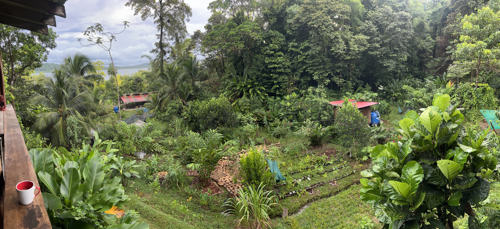
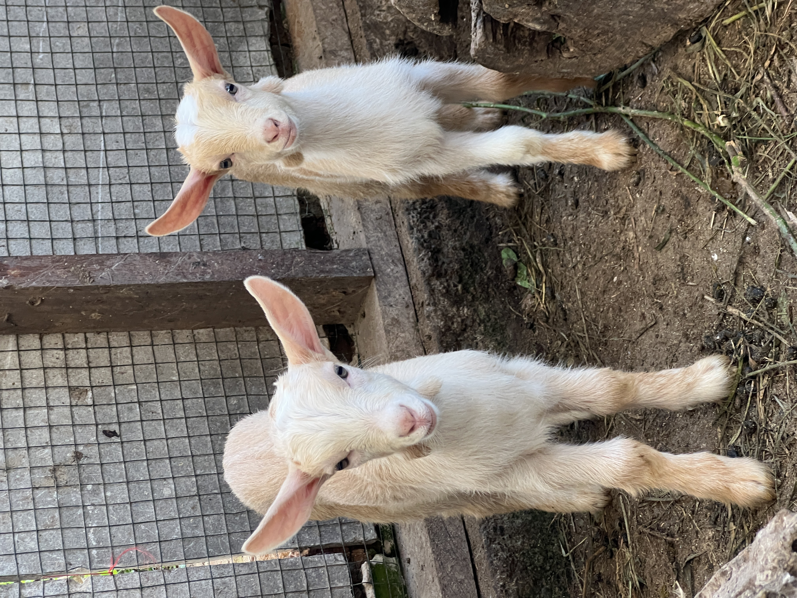
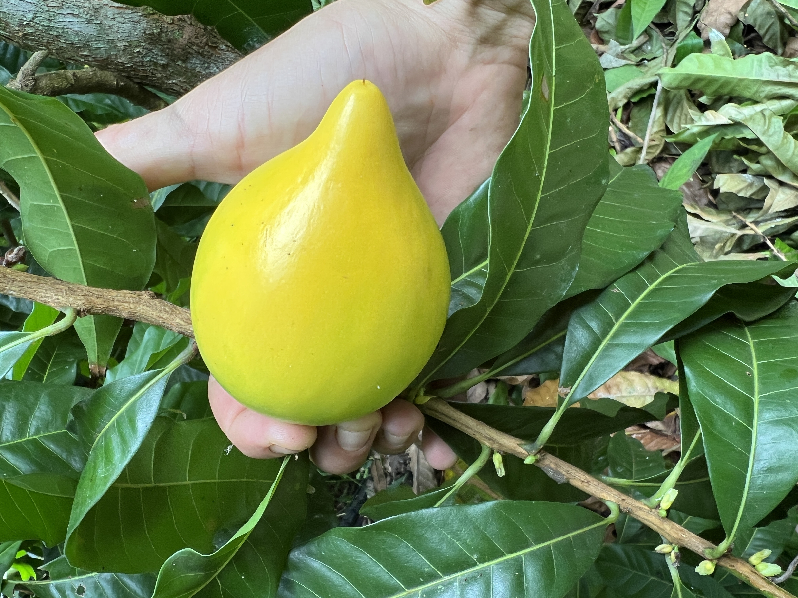

Tour de Té, Elixires y Finca Viva
Este tour matutino se trata de relajarse y conectarse. Camina por la finca, conoce a los animales, prueba frutas tropicales frescas y aprende cómo un bosque de alimentos vivo funciona en armonía con la naturaleza.
- Té tropical fresco de árboles cultivados en la finca
- Caminata guiada por la finca
- Conoce los animales de la finca
- Prueba frutas de temporada directamente del árbol
- Aprende cómo la microbiología impulsa la finca
$30 Por Persona · Máx 10

Caminata Regenerativa y Tour de Sistemas
El tour vespertino profundiza en cómo funciona la finca. Aprende sobre biología del suelo, microorganismos indígenas, sistemas de animales sin olor y el ciclo completo de insumos de la finca — todo diseñado para imitar el bosque tropical que nos rodea.
- Té fresco hecho en la finca para empezar
- Todos los insumos de la finca y biología del suelo explicados
- Sistemas de animales sin olor explicados
- Microbiología en acción
- Perspectivas sobre árboles frutales y manejo de la tierra
- Prueba frutas de temporada y elixires silvestres
$30 Por Persona · Máx 10

Canto de Pájaros y Desayuno
Experimenta la finca al amanecer cuando los pájaros están más activos. Camina por el bosque de alimentos mientras el sol sale, luego disfruta de un desayuno casero completo hecho con ingredientes frescos de la finca.
- Plato de huevos frescos de nuestras propias gallinas
- Verduras cultivadas en la finca — moringa, katuk, bejuco de ajo
- Raíces como taro, yuca, ñame
- Pan hecho localmente
- Café o té de hojas tropicales para empezar
- Caminata matutina completa por la finca incluida
$45 Por Persona · Máx 10

Tours Privados
Más tiempo uno a uno con los propietarios de la finca. Explora la finca a tu propio ritmo, ve el paisaje superior y todos los rincones, y profundiza en la vida fuera de la red, animales, árboles y manejo del suelo.
- Personalizado según los intereses de tu grupo
- Horario flexible y ritmo
- Acceso completo a toda la propiedad
- Tiempo individual con los propietarios de la finca
- Enfoque profundo en temas específicos
- Disponible cualquier día con aviso previo
Precios varían según el tamaño del grupo y duración